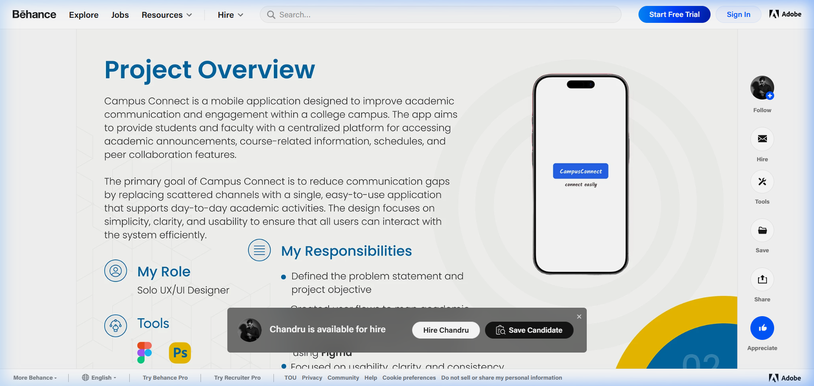

CampusConnect
College Administration Platform
A college administration mobile app that centralises academic communication for students, faculty, and administrators. The challenge was simplifying complex, multi-role workflows into a single interface that each user type could navigate without friction.

Overview
CampusConnect is a college administration mobile app that brings together the key workflows of a campus — attendance management, academic tasks, announcements, and scheduling — into a single platform accessible by students, faculty, and administrators through role-specific interfaces.
The project required careful thinking about information architecture and permission-based UI: each user type should see only what's relevant to them, without a cluttered interface that tries to serve everyone at once.
Context & Problem
College campuses typically manage academic communication through disconnected channels — notice boards, WhatsApp groups, email, and separate systems for attendance and scheduling. This fragmentation creates friction for every user type:
- Students struggle to keep track of attendance, upcoming tasks, and announcements from multiple sources.
- Faculty need a simple way to record attendance, post updates, and manage academic timelines without switching between tools.
- Administrators require an overview of campus-wide data — attendance rates, class schedules, staff — accessible at a glance.
The goal was to design a single app that addresses all three needs without creating a complex, confusing interface that tries to be everything to everyone simultaneously.
Understanding the Experience
The design process began with defining the distinct mental models of each user type — what they care about, what tasks they perform most frequently, and what information needs to be immediately accessible.
- Attendance percentage and subject-wise breakdown
- Upcoming assignments and submission deadlines
- Class timetable and changes
- Announcements from faculty
- Quick attendance marking for today's classes
- Posting announcements and task deadlines
- Viewing class lists and student records
- Scheduling and timetable management
- Campus-wide attendance overview
- Staff and class management
- Announcements to all users
- Reporting and summary views
Information Architecture
The IA is structured around a shared navigation shell with role-based content. After login, the app identifies the user's role and populates the navigation and dashboard with role-appropriate content. The core sections remain consistent:
The key architectural decision was making the navigation identical for all roles, but changing the content and permissions per section. This avoids separate apps while keeping the interface coherent for each user type.
Key User Flows
Two primary flows were defined and designed in detail:
Select today's class
View class roster
Present / Absent
Submit & save
Attendance widget
Subject overview
Session-level log
Wireframes
Wireframes were produced in Figma for the key screens across all three user roles. The priority was validating the layout logic before committing to visual styling — particularly for the dashboard and attendance screens, which carry the most information density.
Role-Based Dashboard Wireframing
- Information Priority: Tested layout hierarchies to place high-frequency widgets (Attendance % for students, Mark Attendance for faculty) above secondary announcements.
- Modular Grid: Designed scalable card modules that adapt when switching between Student, Faculty, and Admin permission tiers.
Attendance & Task Workflows
- Tap-Count Reduction: Wireframed an attendance roster interface allowing faculty to record full class statuses within 3 quick taps.
- Figma Interactive Prototypes: Validated navigation flows in interactive Figma wireframe prototypes before establishing visual tokens.
Final UI & Interface Design
The high-fidelity screens were designed with a clean blue and white palette that communicates trust and structure — appropriate for an academic administration tool. The colour accent (blue) is used functionally for interactive elements, active states, and status indicators rather than for decoration.
Typography uses a tight hierarchy: section headings at 18px Semibold, data values at 14px Regular with generous line height, and status labels as small uppercase caps — keeping information readable even in data-dense views.

Design System & Components
A component library was built to ensure consistency across the three role-based interfaces. Shared components reduce duplication and make it easier to apply role-specific content without redesigning layouts.
Shared Navigation & Shell
- Role-based header with active status indicator
- Unified bottom navigation bar across all roles
- Quick action drawer for high-frequency tasks
Data & Form Components
- Attendance roster cards with tap-to-toggle status
- Task deadline cards with priority tags
- Notice banner with high-contrast alert states
Reflection & Takeaways
CampusConnect was the most complex project I've worked on from an information architecture perspective. The biggest challenge was avoiding the trap of designing the administrator experience first and then trying to simplify it for students. The better approach was to design each role's experience independently, then find the shared structural components.
- Task Efficiency: The attendance marking flow for faculty taught me how much small interaction decisions matter in task-heavy contexts. Reducing taps and adding instant status feedback significantly improved usability.
- Systemic Flexibility: Structuring permissions at the component level made it seamless to maintain a single application code and design footprint across 3 distinct user roles.